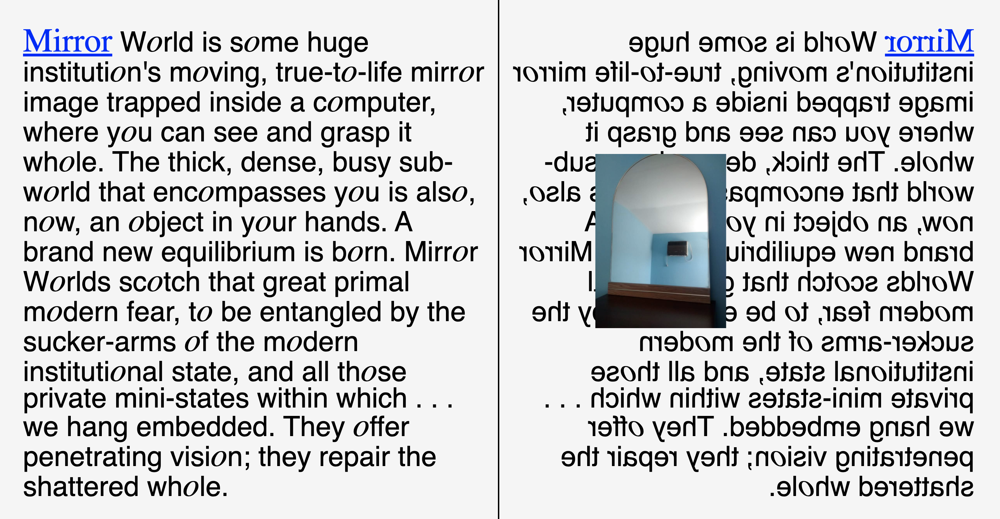
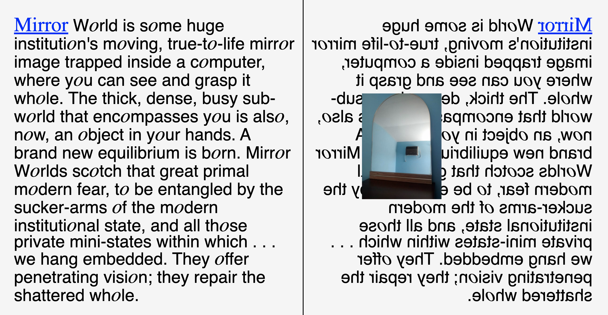

site
A site and book featuring mirrors from craigslist paired with literature discussing mirrors. The text ranges from topics like the mirrorworld to myths (breaking a mirror yields seven years of bad luck).
The mirrorworld "is some huge institution's moving, true-to-life mirror image trapped inside a computer, where you can see and grasp it whole. The thick, dense, busy sub-world that encompasses you is also, now, an object in your hands. A brand new equilibrium is born. Mirror Worlds scotch that great primal modern fear, to be entangled by the sucker-arms of the modern institutional state, and all those private mini-states within which . . . we hang embedded. They offer penetrating vision; they repair the shattered whole. (Philip E. Agre and Marc Rotenberg, eds, Technology and Privacy: The New Landscape, MIT Press, 1997)

 
